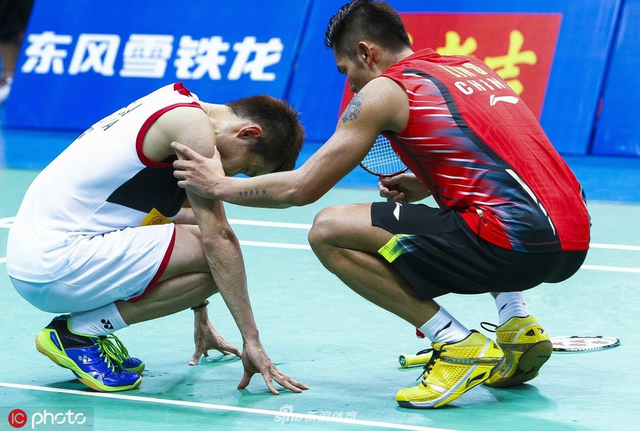
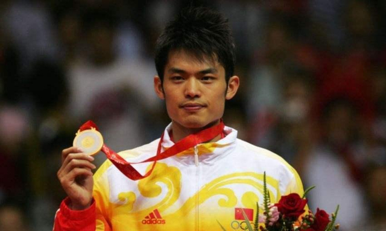
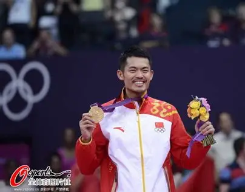
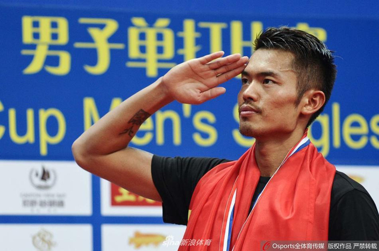

职业生涯
从少年成名到传奇谢幕，回顾超级丹20年的传奇征程
1995-2000年 | 少年成长期
入选国家队，开启职业之路
12岁夺得全国青少年比赛男单冠军，被八一队选中；17岁入选中国国家羽毛球队一队，成为国家队重点培养的新星，为后续的传奇生涯奠定了坚实基础。
2002-2004年 | 初露锋芒期
登顶世界第一，斩获首个世界冠军
2002年，不满19岁的林丹登上国际羽联男单世界第一的宝座，成为当时最年轻的世界第一男单；2004年，随中国队夺得汤姆斯杯冠军，斩获职业生涯首个世界冠军头衔。
2006-2008年 | 巅峰开启期
世锦赛三连冠，北京奥运封神
2006年首夺世锦赛男单冠军，随后完成世锦赛三连冠，开启对世界羽坛的统治；2008年北京奥运会男单决赛，以压倒性优势击败李宗伟，夺得首枚奥运金牌，完成职业生涯首个全满贯。
2010-2012年 | 王朝鼎盛期
卫冕奥运冠军，达成双圈全满贯
2010年广州亚运会夺冠，成为羽坛历史上唯一的全满贯选手；2012年伦敦奥运会逆转李宗伟成功卫冕，成为奥运史上首位男单卫冕冠军，正式达成前无古人的双圈全满贯成就。
2013-2018年 | 传奇延续期
外卡夺冠，刷新历史纪录
2013年，凭借世界羽联外卡参赛，第五次夺得世锦赛冠军，创造外卡夺冠的历史奇迹；2014年仁川亚运会夺冠，再次刷新双圈全满贯纪录；34岁闯入世锦赛决赛，成为世锦赛史上最年长的男单决赛选手。
2020年 | 传奇谢幕
正式退役，结束20年职业生涯
2020年7月4日，林丹正式通过社交媒体宣布退役，告别国家队，结束了自己长达20年的辉煌职业生涯，留下了无数经典名场面和至今无人超越的羽坛纪录。



